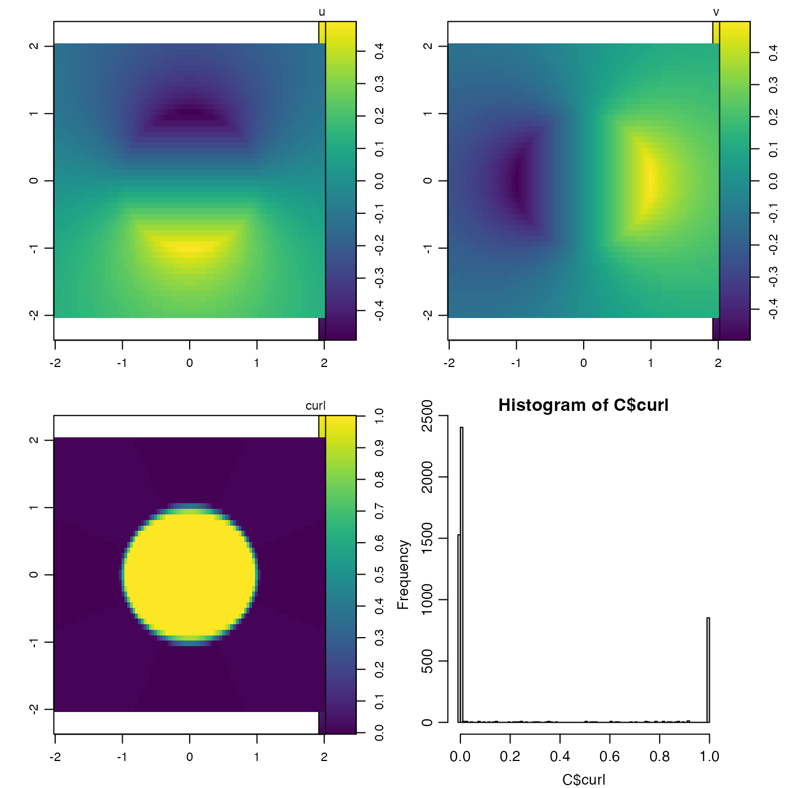

Calculate the z component of the curl of an x-y vector field.
curl(u, v, x, y, geographical = FALSE, method = 1)matrix containing the 'x' component of a vector field
matrix containing the 'y' component of a vector field
the x values for the matrices, a vector of length equal to the
number of rows in u and v.
the y values for the matrices, a vector of length equal to the
number of cols in u and v.
logical value indicating whether x and y
are longitude and latitude, in which case spherical trigonometry is used.
A number indicating the method to be used to calculate the first-difference approximations to the derivatives. See “Details”.
A list containing vectors x and y, along with matrix
curl. See “Details” for the lengths and dimensions, for
various values of method.
The computed component of the curl is defined by \(\partial \)\( v/\partial x - \partial u/\partial y\) and the
estimate is made using first-difference approximations to the derivatives.
Two methods are provided, selected by the value of method.
For method=1, a centred-difference, 5-point stencil is used in
the interior of the domain. For example, \(\partial v/\partial x\)
is given by the ratio of \(v_{i+1,j}-v_{i-1,j}\) to the
x extent of the grid cell at index \(j\). (The cell extents depend on
the value of geographical.) Then, the edges are filled in with
nearest-neighbour values. Finally, the corners are filled in with the
adjacent value along a diagonal. If geographical=TRUE, then x
and y are taken to be longitude and latitude in degrees, and the
earth shape is approximated as a sphere with radius 6371km. The resultant
x and y are identical to the provided values, and the
resultant curl is a matrix with dimension identical to that of
u.
For method=2, each interior cell in the grid is considered
individually, with derivatives calculated at the cell center. For example,
\(\partial v/\partial x\) is given by the ratio of
\(0.5*(v_{i+1,j}+v_{i+1,j+1}) -
0.5*(v_{i,j}+v_{i,j+1})\)
to the average of the x extent of the grid cell at indices \(j\) and
\(j+1\). (The cell extents depend on the value of
geographical.) The returned x and y values are the
mid-points of the supplied values. Thus, the returned x and y
are shorter than the supplied values by 1 item, and the returned curl
matrix dimensions are similarly reduced compared with the dimensions of
u and v.
This function is under active development as of December 2014 and is unlikely to be stabilized until February 2015.
Other things relating to vector calculus:
grad()
library(oce)
## 1. Shear flow with uniform curl.
x <- 1:4
y <- 1:10
u <- outer(x, y, function(x, y) y/2)
v <- outer(x, y, function(x, y) -x/2)
C <- curl(u, v, x, y, FALSE)
## 2. Rankine vortex: constant curl inside circle, zero outside
rankine <- function(x, y)
{
r <- sqrt(x^2 + y^2)
theta <- atan2(y, x)
speed <- ifelse(r < 1, 0.5*r, 0.5/r)
list(u=-speed*sin(theta), v=speed*cos(theta))
}
x <- seq(-2, 2, length.out=100)
y <- seq(-2, 2, length.out=50)
u <- outer(x, y, function(x, y) rankine(x, y)$u)
v <- outer(x, y, function(x, y) rankine(x, y)$v)
C <- curl(u, v, x, y, FALSE)
## plot results
par(mfrow=c(2, 2))
imagep(x, y, u, zlab="u", asp=1)
imagep(x, y, v, zlab="v", asp=1)
imagep(x, y, C$curl, zlab="curl", asp=1)
hist(C$curl, breaks=100)
